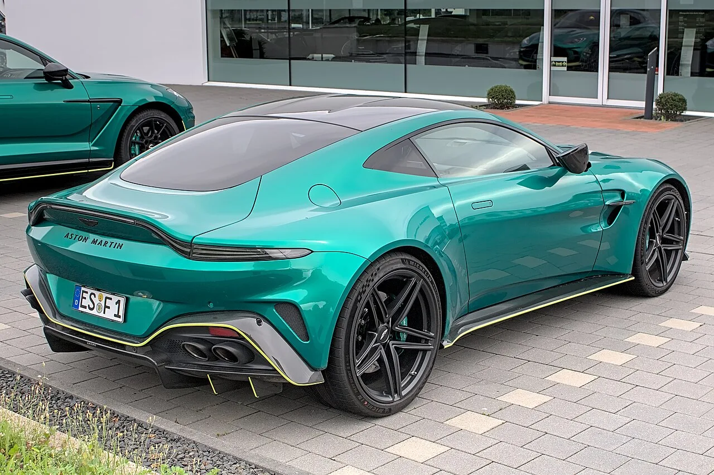

▲ 현행 애스턴마틴 뱅티지. RS는 여기에 트랙 지향 공력과 출력을 더한다
애스턴마틴이 뱅티지의 가장 과격한 버전을 준비하고 있습니다. 이름은 뱅티지 RS로 거론됩니다.
위장막을 두른 프로토타입이 뉘르부르크링에서 테스트 중인 모습으로 포착됐습니다. 겨냥하는 상대는 분명합니다. 포르쉐 911 GT3입니다.
다만 출력은 확정된 것이 없습니다. 현행 뱅티지의 제원과 외관에서 읽히는 단서만 있는 단계입니다.
1. 확인된 것은 외관뿐
현재 확인된 정보는 프로토타입에서 눈으로 읽히는 것이 전부입니다.
양산형 리어윙이 달렸습니다. 이전에 포착된 프로토타입보다 높이가 올라갔습니다. 여기에 확장된 프런트 스플리터와 새 디퓨저가 조합됩니다.
휠아치 벤트가 커진 것도 눈에 띕니다. 브레이크와 타이어에서 나오는 열을 빼내는 통로입니다. 트랙 주행을 전제하지 않으면 이렇게까지 키우지 않습니다.
배기는 중앙에 4출로 모였습니다. 그리고 형광 녹색 브레이크 캘리퍼가 위장막 사이로 보입니다. 통상 카본 세라믹 브레이크에 쓰이는 색 조합입니다.
타이어는 피렐리 P Zero R입니다. 트랙 지향 성향이 강한 스트리트 타이어라, 이 차의 성격을 그대로 드러내는 선택입니다.
2. 출력은 전부 추정
여기서부터는 확정된 것이 없습니다.
현행 뱅티지는 4.0리터 트윈터보 V8로 670마력, 590lb-ft를 냅니다. 이미 상당한 수치입니다.
RS는 이를 넘어 700마력 이상, 600lb-ft 이상이 될 것으로 관측됩니다. 애스턴마틴이 발표한 값이 아니라 매체 추정입니다.
| 항목 | 현행 뱅티지 | RS(관측) |
|---|---|---|
| 엔진 | 4.0L 트윈터보 V8 | 동일 계열 추정 |
| 최고출력 | 670마력 | 700마력 이상 |
| 최대토크 | 590lb-ft | 600lb-ft 이상 |
| 성격 | 로드 중심 GT | 트랙 지향 |
V12 탑재 가능성도 거론됐지만 낮게 평가됩니다. 애스턴마틴에는 5.2리터 트윈터보 V12가 있지만, 이를 뱅티지에 넣으면 상위 모델인 뱅퀴시의 판매를 잠식하게 됩니다.
출시 시점도 공개되지 않았습니다.

▲ 현행 뱅티지는 670마력이다. RS는 700마력을 넘길 것으로 관측된다
3. 911 GT3와 붙는다는 것의 의미
겨냥 상대가 911 GT3라는 점이 이 차의 성격을 규정합니다.
GT3는 4.0리터 자연흡기 수평대향 6기통에 9,000rpm까지 도는 엔진을 씁니다. 출력은 500마력대로 뱅티지 RS 예상치보다 낮습니다.
그런데 GT3가 강한 지점은 절대 출력이 아닙니다. 무게, 밸런스, 그리고 수십 년간 다듬어온 서킷 셋업입니다.
뱅티지 RS가 700마력을 넘겨도 그것만으로는 GT3를 이길 수 없습니다. 프런트 엔진 GT를 트랙에서 통하게 만들려면 무게 배분과 냉각, 그리고 반복 주행에서의 안정성을 확보해야 합니다.
뉘르부르크링에서 테스트하는 이유가 여기에 있습니다. 출력은 시험대에서 만들지만, 트랙 성능은 실제 주행에서만 검증됩니다.
4. 애스턴마틴이 이 시기에 RS를 내는 배경
최근 애스턴마틴의 움직임을 함께 놓고 보면 그림이 읽힙니다.
발렌이 838마력 V12로 150대 한정 공개됐습니다. DB12 S도 나왔습니다. 상위 라인에서 화제를 만드는 전략이 이어지고 있습니다.
뱅티지 RS는 성격이 다릅니다. 발렌이 수십억 원짜리 한정 커미션 모델이라면, 뱅티지 RS는 상대적으로 접근 가능한 가격대의 트랙 모델입니다.
브랜드 입장에서 이런 차가 필요한 이유가 있습니다. 한정판은 화제를 만들지만 판매량을 만들지는 못합니다. 실제 수익은 뱅티지 같은 볼륨 모델에서 나옵니다.
GT3 구매층을 일부라도 가져올 수 있다면 의미가 큽니다. 이 세그먼트는 포르쉐가 사실상 독점해온 영역입니다.

▲ 애스턴마틴 뱅퀴시. V12를 뱅티지에 넣으면 이 차의 자리가 흔들린다
5. 남은 물음표
판단을 유보해야 할 항목이 명확합니다.
❓ 아직 모르는 것
- 출력·토크 — 700마력 이상은 추정. 공식 발표 없음
- 중량 — 트랙 모델에서 가장 중요한 수치인데 언급 없음
- 가격 — 미공개
- 생산 수량 — 한정판인지 카탈로그 모델인지 불명
- 출시 시점 — 미공개
- 변속기 — 언급 없음 (현행 뱅티지는 8단 자동)
중량이 특히 중요합니다. 트랙 모델의 성패는 마력보다 마력당 무게에서 갈립니다. 애스턴마틴이 카본 파이버를 얼마나 썼는지에 따라 결과가 크게 달라집니다.

▲ 애스턴마틴은 상위 라인에서 화제를 만드는 전략을 이어가고 있다
변속기도 관전 포인트입니다. 최근 포르쉐는 "강제될 때까지 수동을 지키겠다"는 입장을 밝혔고, GT3에는 수동 선택지가 있습니다. 뱅티지 RS가 자동만 낸다면 그 자체가 차이가 됩니다.
6. 정리
확인된 사실은 애스턴마틴이 뱅티지의 트랙 지향 사양을 뉘르부르크링에서 시험 중이라는 것입니다. 양산형 리어윙, 확장 스플리터, 새 디퓨저, 중앙 4출 배기, 피렐리 P Zero R이 확인됩니다.
출력 700마력 이상은 추정치입니다. 현행 뱅티지가 670마력이라는 사실에서 역산한 관측이고, 애스턴마틴은 어떤 수치도 발표하지 않았습니다.
V12 탑재 가능성은 낮게 평가됩니다. 상위 모델 뱅퀴시의 판매를 잠식하기 때문입니다.
가격·중량·수량·출시 시점이 전부 미공개입니다. 특히 중량은 트랙 모델의 성패를 가르는 수치인데 아직 언급이 없습니다.